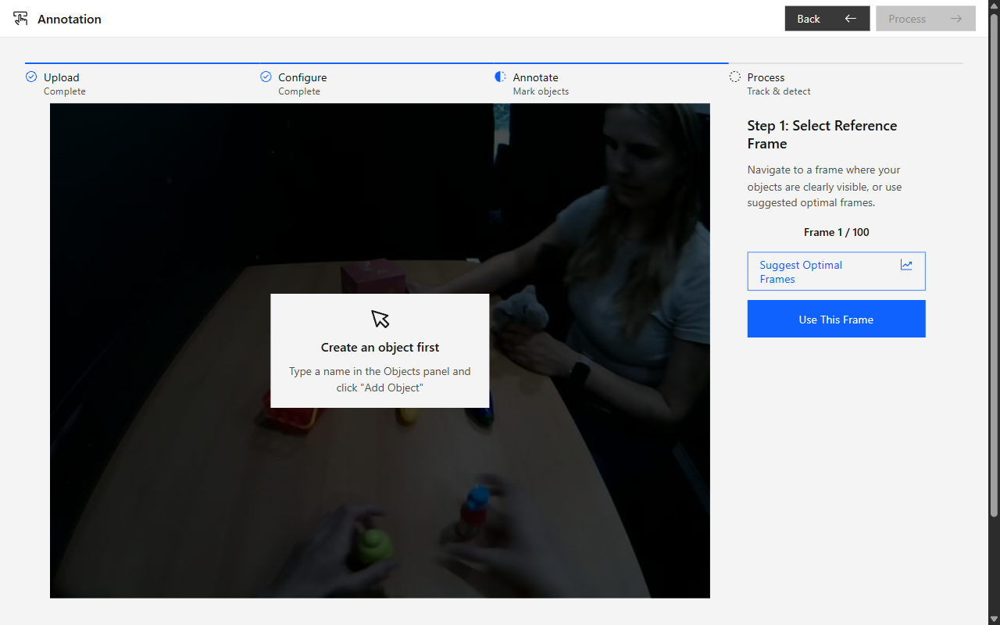
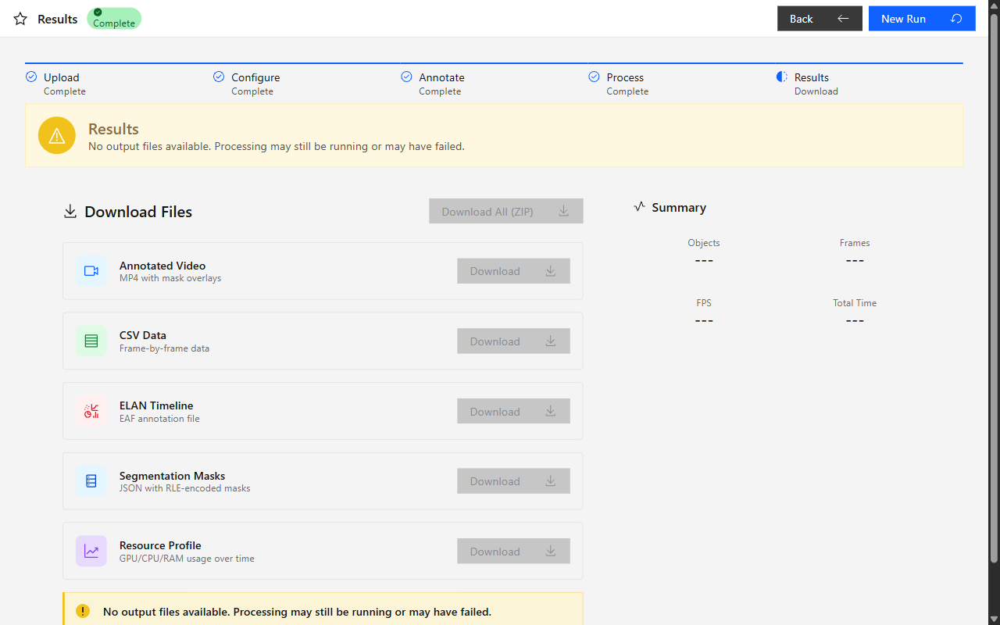
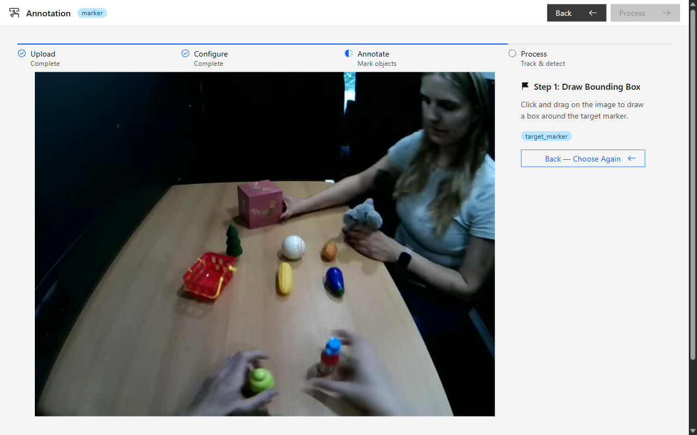
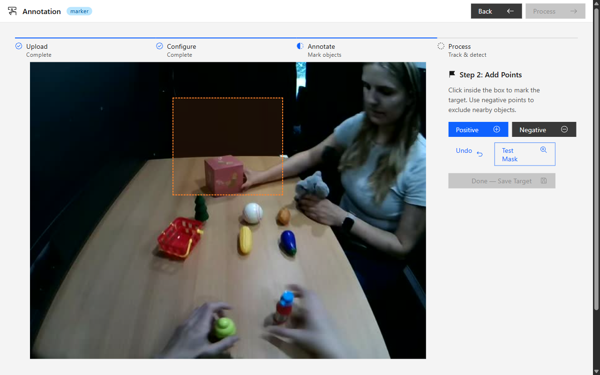

User Guide — Annotating Videos and Understanding Results
EnvisionBox project • envisionbox.org
EnvisionObjectAnnotator (EOA) uses AI to automatically track objects across a video and detect when a target object overlaps with others. The tool was developed for infant research — specifically to detect when an infant (wearing a head-mounted camera) looks at specific objects — but it can be used for any scenario where one object's overlap with others needs to be measured.
You mark objects in a single reference frame. The AI model (SAM2) then propagates those masks through the entire video, detects overlap events, and produces three output files ready for further analysis.


Upload your video, set the frame extraction rate, choose a SAM2 model, and configure the overlap threshold.
Navigate to the best frame for annotation — or use the "Suggest Optimal Frames" tool to find high-quality candidates automatically.
Draw a bounding box around your gaze ring or target object, then refine with positive/negative click points. The tool walks you through this step-by-step.
After the target is set, add the other objects (toys, faces, etc.) by name and annotate each with click points.
Click "Process". SAM2 propagates masks through the entire video and detects overlap events.
Get the annotated video, CSV, and ELAN file as a ZIP archive from the Results page.
On the Config page, click the upload area and select your video file. Supported formats: .mp4, .mov, .avi, and most other common video formats.
Optionally set trim start and trim end times (in seconds) to process only a portion of the video. This can significantly reduce processing time.
Set the frame extraction rate (frames per second). A rate of 5–10 fps is typical. Higher values give finer time resolution but take longer to annotate and process.
Choose a SAM2 model based on your speed/accuracy needs:
Overlap threshold — the minimum percentage of pixel overlap between the target mask and another object's mask required to register a "looking at" event. The default is 10%. Lower values detect more (including brief) events; higher values require more sustained contact.
Bidirectional propagation — when enabled (the default), SAM2 tracks objects both forward and backward from the reference frame. More accurate but roughly doubles processing time. Disable if your reference frame is the very first frame of the video.
On the Annotation page, the first panel you see is Step 1: Select Reference Frame. Navigate through the video using the Prev/Next buttons or the frame slider until you find a good frame.
Once you have navigated to your chosen frame, click "Use This Frame".
After selecting a frame, the panel asks: "What would you like to do?"
The panel shows: "Click and drag on the image to draw a box around the target marker."
Click and hold on one corner of the target object, drag to the opposite corner, and release. A cyan bounding box appears around the area. If you drew it in the wrong place, click "Back — Choose Again" to cancel and return to the prompt.
After the bounding box is drawn, the panel automatically advances to Step 2: Add Points. The AI uses the box as an initial mask boundary; you can now refine it:
When the mask looks correct, click "Done — Save Target".


After saving the target, the full Objects panel opens. For each additional object you want to track:
cup, toy_car, face).| Key | Action |
|---|---|
| C | Jump focus to the object name field |
| Enter | Save the current object's points |
| T | Test mask (preview the AI mask) |
| 1 | Switch to Positive point mode |
| 2 | Switch to Negative point mode |
| Ctrl+Z | Undo last annotation point |
| ← / → | Navigate to previous / next frame |
Once at least one object is saved, the Process button in the top-right header becomes active. Click it. SAM2 propagates masks through every frame and detects overlap events. On a modern GPU, a 10-second video at 5 fps takes 10–30 seconds. On CPU only, this may take several minutes.
Progress stages shown on screen:
The Results page shows a summary of detected overlap events and a download button for all output files as a single ZIP archive. The CSV export is generated asynchronously and may appear a few seconds after the other files.
The original video with colored mask overlays for each object. Overlap events are shown as on-screen labels ("Looking at: toy").
One row per frame per object. Contains bounding box coordinates, centroid position, mask area, and overlap status for every tracked object.
Time-aligned annotation file for ELAN software. Contains "Looking at: [object]" events on separate tiers for each tracked object.
Each tracked object is shown with a semi-transparent colored mask. When the target overlaps an object, an on-screen label appears indicating the event. This is useful for a quick visual sanity check of the detection results.
The CSV has one row per frame per object. Key columns:
| Column | Description |
|---|---|
frame_idx | Frame number (0-based) |
obj_name | Object name as you entered it |
bbox_x, bbox_y, bbox_w, bbox_h | Bounding box (pixels, relative to frame) |
centroid_x, centroid_y | Mask centroid position |
mask_area | Number of pixels in the mask |
overlap_pct | Percentage overlap with the target (0–100) |
is_looking_at | 1 if overlap exceeds the threshold, 0 otherwise |
You can open the CSV in Excel, R, or Python for further analysis. The frame index can be converted to timestamps by dividing by the extraction frame rate.
.eaf file directly in ELAN. Each tracked object appears as a separate annotation tier; overlap events are labelled "Looking at: [object]" with millisecond-precision timestamps aligned to the original video.The ELAN file (.eaf) can be opened directly in ELAN (free software from the Max Planck Institute). It contains one annotation tier per tracked object, with annotations spanning the time ranges where the target was overlapping that object.
Annotations are labelled "Looking at: [object name]". The timing is in milliseconds and is aligned to the original video timeline, accounting for any trim offset you applied.
Only one target object is supported per session. If you name multiple objects with "target" in the name, only the first one will be used as the primary overlap source. If you need to track multiple gaze sources, process the video multiple times with different target annotations.
SAM2 propagation can drift when objects are occluded, move out of frame, or look very similar to the background. To improve tracking:
The ELAN file is only created when:
If the file is missing, check (1) that your target object name contains the word "target" and (2) that the overlap threshold is not set higher than the actual overlap in the video.
Open ELAN (free download at archive.mpi.nl/tla/elan). Go to File → Open and select the .eaf file. The software will prompt you to locate the associated video file — browse to the original video file. The annotations will then appear on the timeline aligned with the video.
Yes. Start a new session for each annotation pass. Sessions are independent and stored separately on your local machine. Previous sessions do not affect new ones.
The CSV and masks JSON are generated asynchronously after the main processing pipeline completes. The Results page may show the annotated video and ELAN file before the CSV is ready. Wait a few seconds and refresh the page — the CSV download link will appear once the export is complete.
EnvisionObjectAnnotator runs entirely on your local machine. No video data, annotations, or results are sent to any external server. All processing is done by the backend running on your computer (or HPC cluster). This makes the tool suitable for working with sensitive or proprietary video data, including infant recordings subject to data privacy regulations.
If you use EnvisionObjectAnnotator in your research, please cite the EnvisionBox project. A full reference will be added here when the corresponding publication is available.
Related resources: